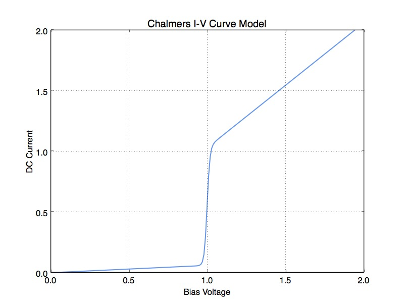
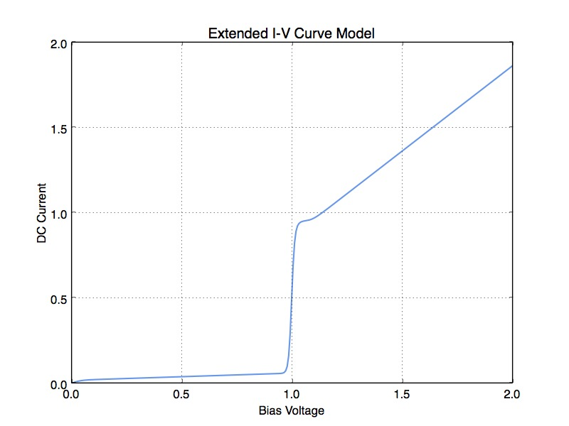
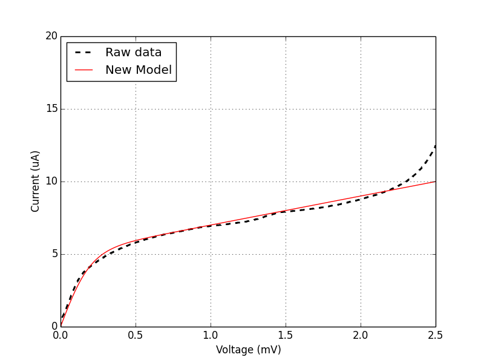
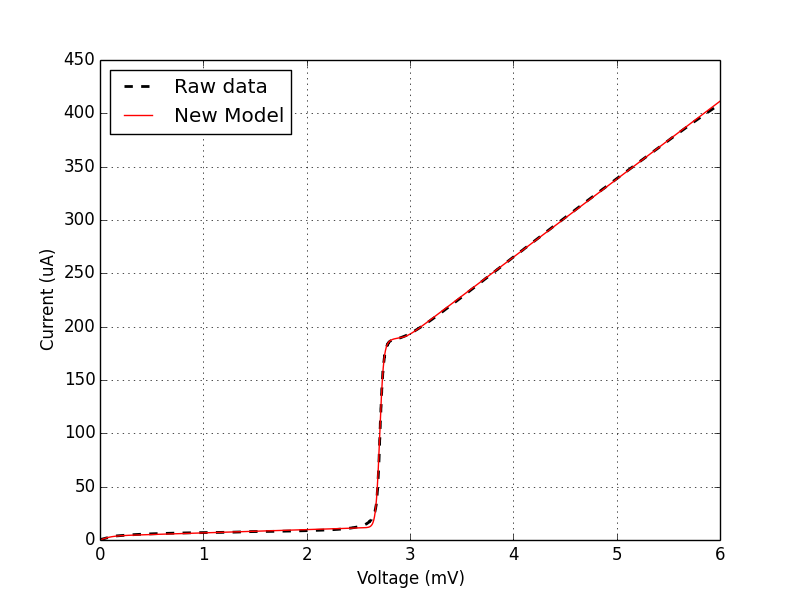

Appendix¶
I-V Curve Models¶
Chalmers I-V Curve Model¶
An I-V curve model is used in:
- Rashid, et al., “Harmonic and reactive behavior of the quasiparticle tunnel current in SIS junctions,” AIP Advances, vol. 6, 2016.
that includes the ability to add subgap resistance, and control the smearing/non-linearity width at the transition voltage (\(V_g\)).
where
- \(I_{dc}\) is the dc I-V curve
- \(V\) is the bias voltage
- \(V_g\) is the gap voltage
- \(a\) describes the non-linearity at \(V_g\)
- \(R_L\) is the subgap resistance
- \(R_N\) is the normal resistance
The normalized I-V curve for this model are shown below.
{kind=link}
Expanded I-V Curve Model¶
I began with the model described in sec:Chalmers I-V Curve Model, but I then added leakage current, the notch often seen above the gap, and the ability to add a current offset above the gap.
This is the model that I fit to experimental I-V data.
where
- \(I_{dc}\) is the dc I-V curve
- \(I_L\) is the leakage current
- \(a_0\) describes the non-linearity width seen at the origin
- \(V\) is the bias voltage
- \(V_g\) is the gap voltage
- \(a\) describes the non-linearity width seen at \(V_g\)
- \(R_L\) is the subgap resistance
- \(R_N\) is the normal resistance
- \(I_n\) is the notch current
- \(V_n\) is the notch voltage
- \(a_n\) describes the non-linearity width of the notch
- \(I_o\) is the offset current (above the gap)
Note:
- Line 1-2 describe the leakage current
- Line 3-4 describe the subgap resistance
- Line 5 describes the transition at \(V_g\) and the normal resistance
- Line 6 describes the notch
- Line 7 describes the current offset above \(V_g\)
This model contains 10 independent parameters (excluding the bias voltage). As long as a reasonable initial guess is provided, these parameters can be fit to experimental data using a standard non-linear least squares fit (e.g., curve_fit in the SciPy package for Python).
The model is shown below. Note the differences between this model and the one shown under sec:Chalmers I-V Curve Model.

- there is a sharp initial rise just above \(V=0\) to account for leakage current
- there is a notch above the transition voltage
- the current is reduced above the gap.
{kind=link}
The addition of leakage current really helps fit the model to experimental data below the gap.
{kind=link}
And the addition of the notch and current offset likewise help fit the model to experimental data above the gap.
{kind=link}
The mean residual error for the example shown above is 0.68 uA. The worst fitting area is just below the gap voltage. Additional parameters could be added to fit this area as well, but I feel that 10 is enough for now.